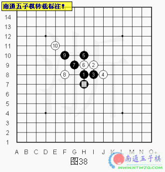
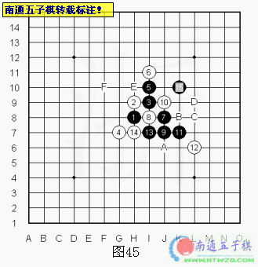

花月基础课程【浙江连珠出品】【南通五子棋获权转载】
#1 花月基础课程【浙江连珠出品】【南通五子棋获权转载】 作者：有志青年 发表时间：2006-5-12 11:19:18
源贴地址：http://www.zjrenju.net/forum/dispbbs.asp?boardid=2&replyid=22093&id=4050&page=1&skin=0&Star=1
本课程为浙江少儿基础课程第一册的三分之一内容.由吴镝.徐永伟整理,版权为浙江弈缘五子棋俱乐部所有.在未得到俱乐部许可的情况下,禁止做为商业用途发布.
花月开局是直指第四局，做为黑必胜开局基本上退出了比赛的舞台。但做为攻击练习的基础是非常必要的。在花月开局中任何变化都是以黑胜告终。但如何最短手数取胜以及取胜过程中的手筋都是我们学习的目标。有很多取胜的手法都是非常巧妙的。相信会给大家带来启发。花月开局后，通过我们已经学习过的基础知识，我们知道五子棋是围绕限制和发展的理论来完成的，那么白4的思路也就基本如图一的几个点，限制的话基本采用去防守黑的活二，那么基本也就A和C点，由于A点更接近棋盘中间，那么他的防守相对比C点更好，假如白想自己发展，那么就会选择下在B、E、D点，这三个点来说是B点最强，那么我们就主要对在A和B点的防守做些分析。
首先我们来看看花月一个经典的变化。黑如何限制住白棋的攻击并自己取胜。如图2、白4是花月开局最强防守，黑5两打I10、J10，我们先看黑5在J10做拓展棋型的分析，黑5后白棋没自己的连接，还是必须对黑棋进行防守或者增加自己的连接手段，在我们已经对斜线三的棋型了解中，我们知道现在黑的连接是非常多的，白也就同样形成了许多防点，我们逐步对图中的防点进行分析。
假如白6在G8点自己做两个活二的话，黑7在I10防守住白的一个活二，同时形成团角，并且对白在G线的H点进行限制，如图3、这样白如果单防的话，黑的团角的作用就会充分体现，11线和K线的进攻足以获得胜利，白如果自己进攻，唯一可以有后续手段的只有在A点活三，然后B点连接，但黑防D、C后，黑的团角仍然没有被破坏，相反却多了D-1的活二和C-5的活二，这样黑还形成了可以通过F点活三后继续在G点活三和黑7进行连接的手段，这样白无论如何也防守不住黑的几路进攻线，所以这个白6不强。白6在J9黑7也是类似的下法，黑获胜也相对简单
如果白6在G9的话，如图4、黑7就无法像刚才一样在I10形成团角了，否则的话，白可以通过在A、E点活三，抓黑在D点的3*3禁。这里黑同样没有进攻的连接，自己没一个活二，白却有个活二的连接，那么黑怎么下才是最好的呢？我们首先来看白棋的进攻路线，白有2-6的活二存在，进攻有连续手段的只有在B点活三然后在F点活三寻找连接，那么可以对白这路进攻连接的限制点是C点，但黑不可以直接下在C点，但由于有黑5的存在，白落在B点活三后，黑在A点就多个子力，如果白想继续活三就会受到黑在C点的反三，而白如果想在A点活三的话，就会形成和图三的变化类似的局面，这样一分析就发现虽然白存在一个活二，但却不具备进攻的手段，黑就可以不理会白的活二自己发展。图中黑7冲四后黑9继续形成团角，白无解。
白6在G10形成两个活二形状，不理会黑棋在右侧的厚度.非常激烈的变化。如图5、这里黑如果直接去防守I8白的一个活二的话，虽然是非常稳健的走法，老实的挡住白的斜活二，但这样的下法放弃了对白跳二的防守。虽然白无法取胜，但可以尽可能的利用这个先手把局面导向复杂。参考图5就是黑7=I8点后白如何交换的变化，白10给黑做I7的3*3禁点，如果黑想在I10活三解禁，扩大上方的空间的话，白反三后就多了8-10的活二和下方的空间，这样白就可以获得胜利。图中的11后，大家可以看到最后局面呈现黑优，但取胜困难。
由于白棋的双二进攻路线非常单调，黑只要选择出完全牵制住白攻击的点就可以轻易取胜。黑可以限制白棋两个活二的全部进攻手段的点在哪里呢？如图6、黑7在J8做三个活二，这个点并不是简单的去封堵，而是利用自己的活二来牵制住对手，限制了白所有的进攻线，假如白在B、D点活三，黑可在A点形成反三，通过5-7的连接在G点进攻获胜，如果白在F点活三，那么黑可在C点形成反三，之后利用3-7的连接E点进攻和C点联系在M7点继续活三和黑5进行连接。这样的手法在许多对局中经常使用。
如图7是白棋之后唯一具有点
#2 花月基础课程【浙江连珠出品】【南通五子棋获权转载】【第二讲】 作者：有志青年 发表时间：2006-5-13 13:26:31
#3 花月基础课程【浙江连珠出品】【南通五子棋获权转载】[第三讲] 作者：有志青年 发表时间：2006-5-16 21:37:48
假如白10防守K10形成活二连接，黑11=I12防守后形成一个眠三连接，如图21、如果白防守于黑的眠三处C点的话，依然是打断黑联系的防守方法.这也是五子棋防守中最常见的选点方法。黑就可以通过D点活三进攻，白防K8的话，黑在A点活三K点形成双VCF，白14=G12的话，黑同样通过A点的进攻，H点做V后J点形成双杀。白12=F点的话杀法基本类似。如果白12防守黑的活二D点，黑在C点冲4后，然后在E点进攻，白16防K9点的话，黑K点继续跳活三，白防M点的话，黑在A点形成双杀，防G12的话，黑通过L、N、O的顺序胜利。白16防G13的话，黑在P点做通过G、F、K、L的VCF，同时还存在通过在H点形成双VCF的手段，唯一可以同时对这两条进攻路线有限制的白点在什么地方？白防守后黑怎么获胜？
单纯的防守已经无法起到作用，那么白是不是可以利用自己的活二进行进攻呢？如图22、如果白12在G10活三，黑就可以B点先冲4，增加自己的活二连接，然后防守A点，就形成了一个眠三和两个活二的连接局面，而且形成了通过C、D、E和H、J、K以及G、L、F和M、K、J、N四条进攻的连接线。反看白的虽然还有4-12线的活二存在，但没有后续的连接，而且也无法对黑的几路进攻线起到限制的作用。也找不到可以同时防守黑四路进攻的防点。当然黑13不在B点冲四，也是可以获胜的，这就留给大家自己解决。白12如果在A点活三，黑防守G10后，白同样只有一个活二的连接，也没后续的连接手段，而黑却又多了个眠三和活二的连接。形成了通过H、B、J和N、O、H以及N、M、B的进攻线，白同样无法共防，黑胜。
白8=I10是非常弱的变化，可以参考白6=I10的变化就不做分析。我们来看图23、白8没有选择单纯的去防守.、而是交换掉白的活二和黑棋形成对杀的局面.这种局面是非常考验棋手严谨性的,那么黑11该如何选择呢?图中有A、B、C三种选择，其中B点是参考了我们学习过的黑7的走法来打断白后续联系并且自己拓展的办法。也是这种局面下非常通用的走法.许多的形状下都可以参考这么走。而且形成了通过C、D和E、C以及A、D的多套进攻线，白同样只有一个活二，但还是没有连接的手段，但想要防守的话也就C点可以对黑的进攻线有所限制
白12防K8点后，黑利用自己在B点的连接直接跳活三进攻，如图24、之后黑一路进攻到17，迫使白防I13。黑继续在L8做V，虽然白有眠三存在，但却起不到作用，如果冲了L8点就会给黑在M8点增加一个子力，黑就可以下在C点形成双杀，19后白20就显得无奈，之后21继续做V到23同样形成双杀。白无解。
再来看看黑11=K8的思路.如图25、黑11和白摆出了对攻的架势,而且牵制住了白进攻的后续手段.但缺点是牵制对手的同时也把自己给牵制住了.白见无法攻击,反而利用连续活三把黑的攻势也给瓦解掉了.白16后黑没有VCT,局面呈现黑优,取胜困难.所以黑11走在K8点是不可取的.

再来看11=L10，这个点虽然没有I10点那么扎实，但同样可以给黑带来胜利，是另一种常见的黑拓展方法，他巧妙的控制了白后续进攻线路而且把棋局完全拉出了和白棋的纠缠范围。如图26、我们可以看到这点通过和黑5的联系控制了Z点，又通过和黑眠三的联系控制了X点，在完全防住白棋的同时还形成了Y点和U点两个攻击方向，白攻不出来而且无法防守，而且许多胜的方法也和在I10点的变化类似。黑必胜了。

图26中L10点这样的攻击方式虽然并不常见，但是是非常有灵性的一手，经常可以带领棋局走出困难。如图27、斜月的一个变化，白棋同样需要类似L10点这样的进攻来取得胜利。白棋取胜的绝妙一手在哪里呢？就做为分析习题让大家自行解决。
如图28、.看过了白8活三交换后的变化。我们再来看看白8不活三直接在下方挡住黑活二的走法。图23中A、B两点都可以给黑带来胜利.但在这里的变化中是否A、B两点都可以给黑带来胜利呢？事实上是不行的。这个时候黑9再走A点的话由于白可以向C点活三使得黑缺少了一颗攻击中最重要的子力C点，所以黑以下无法胜了。在这样的情况下我们还是稳健的选择B点为好，图中白如果在C或者D点活三的话，都会转换到白8=J11的变化，单纯的防守也是没有什么作用的，B
#4 花月基础课程【浙江连珠出品】【南通五子棋获权转载】[第四讲] 作者：有志青年 发表时间：2006-5-19 22:53:31
这样我们就完成了白4=G7后黑1打的变化分析，接下来我们来看看黑5第二打点如何取胜的。如图31、黑5=I10是花月这个白4后的第二打点。黑5后白也同样有许多选择，但同样是以黑胜为结论的。假如黑5后白直接防守黑的活二，对这个形状你觉得熟悉吗？不错正是和我们学习过的黑5第一打点雷同的。那么黑7选择在哪里呢？图中的A、B、C三点都可以给黑棋带来胜利，但A点取胜比较简单，是基本的攻击形状，因此选择A点是最明智的。
图32是白六的另一种选择。可惜白只注意到黑之后做棋的强点，却忽略了黑棋简单的VCT取胜。假如白8反防，黑在A点跳活三，白反活三防的话，黑先冲I7点，在E点防守后形成VCF线，然后F点活三进攻，最后J9形成双VCF胜利。白10防J8的话，黑在J9活三，不管白怎么防守，都可在B点做V，同时形成通过C、E的进攻路线，白无法同时防守。所以防守时也不能只依靠对形状的理解，计算依然是最重要的。
图33中的白六是非常弱的一个点。黑７走在Ａ、Ｂ、Ｃ三个点均可取胜。但正好是三种常见攻击形状，因此有很强的学习价值。Ｄ点也属于常见做棋点，但由于黑在上方的厚度不够，白８只要走在Ｃ的位置先手就属于白棋了，所以在这个局面中Ｄ点这种做棋并不适合。下面我们来看看Ａ、Ｂ、Ｃ三点都是如何取胜的。
如图34、黑棋直接向上活三，白没有贪图挡在下面形成的活二反击。而是老实的跟随盖住黑出头的位置。黑9的走法简单有效。直接增加黑棋在这个局部的厚度。白10最强防，11继续不理会白的反四完全把黑棋的攻势展开了，白１２即使冲四防之后由于黑在Ａ、Ｂ、Ｃ、Ｄ点形成VCF，白棋还是要跟随过来防守。而在下面黑优势巨大必胜了。白10=H12黑同样可以用这样的做棋手法。这个变化里黑先前的活三作用就是把棋型打开，增加了自己做棋的点，也增加了白棋防守的难度。黑9更是最常见的攻击形态。

如图35是疏星开局变化中一个类似的攻击形状。黑棋依然自由自在的在自己一侧加强厚度。虽然是不同的开局，棋的布局也不一样，但我们学习花月变化中的基本理论就是在一些类似的变化中可以利用到我们学习过的内容。学习是个积累的过程，通过不段的积累，增加我们对未知变化的理解。是提高我们自己水平的重要手段
如图36、白棋不再跟随防守而是期待用自己的活二来反击。黑９绝妙，首先利用自己的眠三和A、B两点的反三控制住白棋的攻势，白无法展开进攻，只能防守，但黑9同时又指向C、D、L点两侧的攻击线。与黑眠三的配合以及上方的空间，我们可以看到黑现在有许多进攻的路线，比如黑通过E点的活三进攻，白反三的话，黑B点做V，然后P点活三同时形成通过D、J10的四三，白如果反防，黑通过B、M胜利。另外还有通过D、N、O点的进攻路线以及通过C、A点的进攻路线，白无法同时防守，黑必胜了。这种形状在许多变化中都有出现，比如云月开局中也有类似的变化。
我们再来看看图33中B点的攻击。如图37、J9点这种攻击比I11点的攻击还要常见。I11点的攻击是平面性很强的，是铺开自己的局面再多点进攻。J9点的攻击相对要具有很强的立体感，看似一个简单的斜活二，却把后续联系的点给扩大了一倍有余。白８如果防守在C点黑９于D点活三之后走在E点封死白活二并且自己做出双二。黑必胜形了。白８如果防守在D点不让黑在这里出头。黑９走在G点团角必胜。如果白８看到黑９团角的形状而直接走到G点。黑棋可以直接VCT取胜。可见黑7这种做棋方法的凌厉。
如图38是云月必胜变化中一个同样道理的形状。黑11也是应用这种立体感很强的做棋形成左右呼应，使白顾此失彼难以防守，从而增加自己的连接获得胜利。

图33中Ｃ点攻击形状就不是很常见了。采用这种方法需要棋手有很强的计算能力，完全计算出白所有的防点才可以。因为它所应用的不是形状取胜，完全是靠计算的深度来取胜的。我们看看图39、黑棋向下活三后直接走出黑9强力攻击。这里白已经无法防守了，由于需要的计算量很大。不推荐初学者使用这种走法取胜。
黑9的强攻不但可以与黑自己的眠三呼应，同时也把空间完全地
#5 Re:花月基础课程【浙江连珠出品】【南通五子棋获权转载】【第五讲】 作者：有志青年 发表时间：2006-5-20 21:55:19
看过上面三种风格迥异攻击方法，相信应该在攻击形态的了解上有不少收获了。下面我们将讲解这个黑５打点后白六最强防的变化。图41中的白六把黑棋向上的路线完全封盖，并且和D点取得呼应，是很强的防守。这里通常存在A、B、C三个做棋点。C点和前面讲过的图33中B点很相似，但要注意的是白六的位置改变了。白六已经把黑棋向上发展的可能给完全压制住了。如果黑7还选择C点这种形状白8走在B点将对黑形成上下包围。黑无力继续攻击。因此C点在这种情况下是不可取的。再来看B点的可能性。B点是很飘逸的做棋可惜在这个局面下并不扎实。
图42充分体现了白棋计算的精确性和强烈的争先意识。图中黑虽然有两个活二，但只有7-9线的活二具备进攻，5-7线却受到了白的限制，假如黑利用7-9线在A点进攻，企图利用B点继续进攻，白同样可以在D点进行反V的限制，黑防F点的话白可以直接VCT胜，只有防E点，同时形成通过H、J、K的VCF线，但白却可以利用C、F、G的眠三冲，然后在H点形成反V获得胜利。这样一来，也就是说5-7线的黑二起不了作用，因此黑7=K8点也并不可取。图中的J8点是这个局面下最佳的攻击路线。下面将主要讲解J8点之后黑如何突出重围取得胜利。
如图43、黑7后黑棋存在通过B点的跳活三与黑5取得连接进行后续攻击的手段，还存在通过E点取得斜线攻击的可能。白如何防守呢？首先看看A点的防守，利用自己成双二期待牵制住黑棋攻击的线路。可惜现在黑棋力量太强，可以通过在F点活三进攻，白防G点的话在D点继续活三，这样对白的眠三形成限制，使白无法利用到眠三的作用防守，然后在H点继续进攻获得胜利，白反防的话黑同样有直接的VCT取胜的手段。
G9点的防守不成立了。再看看I8点的防守。如图44、白8走在I8点后黑没有直接VCT的能力。但黑棋可以继续巩固自己的优势。黑9只需简单的盖住白的斜活二并自己成一个立二，白就没有了其他的连接，而黑却形成了两个活二，同时7-9线的二可以在A、B、D的点和黑其他的子力获得联系，3-7的活二同样可以和黑9和5获得连接，右边还有白没有子力防守的强大空间。而且白如果防C点的话，黑可以在D点活三两边都可以继续和黑的子力连接，白继续防A点，黑有通过H、J、K的双杀，白反防，黑同样存在A、G、F的双杀进攻线。
这样白就没有其他的选择，只有防守J9限制黑7-9线的活二，但黑却还有3-7线的活二可以利用。如图45、黑在K7活三进攻，白防守后，黑继续I7点活三和黑1取得连接，白只有反三，否则黑可以利用和1的连接在F点形成双杀，白反三后，黑防守的同时自己也形成通过E点的VCF，迫使白继续防守，但黑已经形成了和1的连接的进攻路线，以下通过A、B、C、D点进攻获得胜利。而其他的白防点相对更弱。这样白8=I8的防守也不成立。

白8在K7的防守是非常弱的，黑只要在K8活三然后J9活三就转换到图44中白8=I8。白10=K7的变化。这里还有个防点假如白8=I7，黑如何胜？就当是思考题留给大家了。现在我们来看白最强的防守点K8点。首先看看防守于K8点后黑能否直接VCT取胜。如图46、是黑之后连续活三会形成的结果，白16-18的组合完全封死了黑棋取胜的可能。所以白８后黑是无法直接VCT取胜的。
黑9直接做一个眠三和二个活二形状非常的好。如图47、可惜白还是存在唯一防点。白10隐含着八卦防守。黑棋困难的局面了，可以看到外围被白强有力的控制了，黑想发展必然下A点，但白B点防守后黑想继续连接只有在C点，但白在D点可以形成反三，黑还是要来防守，这样一消耗，黑在中间的就没了胜算，要重新建立外围连接并且获得胜利也就非常困难。因此这样的黑９也是不可取的。
图48中黑9走法是正确的。做出双跳二，充分利用斜线攻击的优势，黑必胜形。值得注意的是黑9的点也是白棋八卦防守的要点。所以有时候对手的最佳防守点往往也是自己的最佳进攻点。黑9后我们可以看到黑形成了通过A、B、C的结果路线，这样我们就可以排除白在许多点的防守，比如E点，同时还有通过D点活三和黑9连接进攻的路线以及在E点连接进攻的手段。白的防守就必须去围绕这些进攻来选择。
白10防在I7点，限制了黑的要点连接，但黑还可以利用3-7线的连接进攻，如图49、
#6 花月基础课程【浙江连珠出品】【南通五子棋获权转载】【第六讲】 作者：有志青年 发表时间：2006-5-25 21:32:24
10防K7，限制黑棋利用3-7的连接，但这里黑还有两个活二可以利用，而且也都可以给黑带来胜利。我们来看一个比较直接的胜法。如图51、黑11=J7活三，白12必须，否则黑可以通过在A点活三后D点胜，如果白在J点形成反三，那么黑就有通过F、E、H10、D的直接VCF胜。图中12后，白没有连接，黑13非常巧妙做棋，形成了通过B、A和G、J以及G、H、K的进攻路线，白无法同时防守黑的三种进攻，黑胜。
白防H10，如图52、黑11绝妙做棋，虽然白可以反三，但黑防守后同样没有后续的连接。和图50就有许多类似的情况。我们的课程是以胜型和他的构建来分析的，是希望大家通过这样的学习掌握更多的基本变化和棋理，加以灵活运用。许多变化的分析需要同学们在课后的时间自己去完成。连珠的最大乐趣是我们对未知变化的一种探索，同时帮助提高自己的思维能力。到此关于这个白四的黑五二打全部讲解过了，下一个课题是白四走在I8点的变化，其中有很多与白四G7点变化类似。
白4在I8点自己形成了一个活二，和黑形成相同的形状。这里黑5有许多选择，图53中A点就和我们学过的白4最强防的变化互通了，在两打的选择中，我们说过，黑不可以下对称的两打点，图中的C点虽然和A点和边线的不同，但我们同样把他归类在对称的范围。黑5在B点是通寒星的变化，也是黑胜点。在这里我们不做分析。我们主要看黑5在J7的变化分析。在我们已经学习过的图型变化中，图中的黑棋型是非常强的扩展方法。黑5后白的防守由于黑的棋型问题，会出现许多同型的变化，我们就对图中的A、B、D、E点做点分析
我们首先来看白6在J10直接防守黑棋活二的变化，而且和黑形成了同样的形状，现在黑有先手，白没有任何连接的手段。如图54、黑7在J6做两个活二。而且还可以通过C点的连接，和黑3获得联系，来加强右下黑的子力和空间。非常强的一手。而且我们可以看到黑有一条非常直接的进攻线。通过A点的连接，形成了A、E、G的进攻路线和A、D、F的多条进攻，而这一切都源于黑1-7的连接，就可以排除掉许多白的防点，这样也就A和B点是可以限制刚才的那路直接的进攻。G9点虽然也同样有限制黑A点直接进攻的能力，但黑主要的攻击手段是在右下，远离黑棋攻击区的防守相对会很弱，我们不做分析。
白8防K5，限制黑利用1-7线连接的进攻线，同时想压缩黑在下方的空间。如图55、黑9利用5-7的连接继续向下发展，白10如果防在A点的话，黑可B点做一子通三路，形成三个活二的连接。而白棋什么也没有，黑胜容易。图中白10反防，黑11防守白的活二同时形成通过A点的VCF，取回先手，之后利用C、D点的进攻获胜。这样来看这个8也不强。
白8防I7点，黑9同样向下发展，开拓自己的空间位置，白9如果防J8的话，如图56、黑11H6点防守白的活二，就把黑在下面的空间打开了，可以和自己的黑9获得联系，形成了通过A、B、E和在C点做V然后利用E、L点进攻的非常明显的两条进攻线，这样就排除了许多白不必要的防点。而且刚才的两路进攻线都是建立在H线上的，白也只有防H线上才可以限制黑刚才的两路进攻。白12防E点是非常弱的，因为黑还存在A点的进攻，黑A点进攻后，白防H点黑有通过O、P、D的VCF，防J点的话，黑M点做V，然后通过N、D点胜利。白只有防在B点形成活二才能够限制黑在A点活三进攻，但黑还存在利用C点做V的手段。之后黑还是保持先手VCT胜利。
假如白10防J4点，黑11在K7做V，形成和黑7的连接，白12防中间J8点的话，如图57、黑利用11形成的连接在I5活三后，和黑9形成后续的进攻线。白14反防的话，黑15同样的进攻，16=L5的话，17在E点活三之后利用A点获得胜利，如果白17防在K8，黑19必须先冲L8点，然后下A点，否则先下A点的话，白可以利用自己的眠三给黑在K6点形成4*3*3禁点。虽然黑可以解禁，但就会变的复杂。16防C点的话，黑F点做V后胜利。图中的14后到16，17活三白虽然有反四但还是给黑形成了另外的活三，还是必须防守，但黑还保留了通过B、C、D的VCF，16反防的话，黑17同样活三进攻，18如果想反那就会形成和刚才一样的反三，然后黑在A点活三同时形成通过E点的VCF，18防K4点的话，黑在G点活三进攻后继续在F点进攻给白形成限制，白的眠三起不到作用，白无解。
12防在L6点限制黑右下的空间，黑13利用和嘿的连接直接进攻。如
#7 花月基础课程【浙江连珠出品】【南通五子棋获权转载】【第七讲】 作者：有志青年 发表时间：2006-6-11 14:39:37
白8防F6后，黑如果直接在D点活三然后F点进攻的话，白强防黑胜就会变的复杂。由于白没有连接，黑可以继续扩大自己的连接和空间为进攻做准备。如图61、黑9K7。这样黑做了个眠三，同时把自己的子力右移，准备和1-3-7线的眠三呼应，也为自己寻找到另外的手筋点C点。而C点一旦被黑控制，黑的空间就完全打开。可以和A、B和9手形成呼应和连接。白却无法抢占C点，因为黑还存在通过D、E的进攻线。比刚才直接进攻的时候多了9和F点的连接，黑就可以VCT胜利。这个就当是习题留给大家自己分析了。这样一来，白还是需要防守，我们将对白10防E、D、G的点做分析。
白10防I7点，这样黑就很自然地可以下在K9点。一方面可以限制白的活二，同时自己也形成了连接和空间。此时白没自己的连接，还是需要对黑进行防守，首先我们来分析下黑的进攻路线，如图62、假如白放弃一手，黑就有通过在A点活三的进攻手段，之后在G点做V，利用B、C点获胜的手段。这条进攻路线是非常明显的。那么白现在的防守就需要围绕黑的这条进攻路线来完成。假如白12防在K6点，黑可以在L9做通过H、A的VCF，这样白防A、H点的话，黑还可以在F点进攻通过D、C点的连接胜利。白防J10点的话，黑A点活三后，在C点做V白同样无解。白12=L7的话也是非常弱的防守。做为思考题。
白12在J9限制黑在K8的活三也是非常弱的变化，这里黑可以直接在K10跳活三，白防中间的话，黑有通过A、L8活三进攻，之后B点活三迫使白防F点，然后在C点活三同时形成通过I11、I12、I13的VCF。图63中的防守的话，黑15做两个活二同时把自己的空间打开。白没自己的连接可能，只有继续防黑棋。但黑已经形成了我们刚才说的那条进攻路线以外，还有通过E点活三进攻然后F点成双杀的手段，以及在C点做V，和黑15取得连接，然后在G点活三进攻。继续H点进攻的这样的取胜路线。白无法同时防守。黑胜。
白12直接防在K8点限制黑棋活三，但黑还是可以利用1-3-7的眠三直接J10进攻，然后在L8活三进攻和黑9联系VCT胜利。图64是黑不冲眠三的取胜方法。黑13直接做V，迫使白防J10，否则黑有通过M9活三后，D点的双杀。图中14后，黑15同样活三进攻，白16防N10的话，黑17A点冲四和13形成连接，然后在B点活三，白防D点的话，黑有通过J6、L6、M7、N6、M6的VCF，反防的话，黑在C点形成VCF。白16反防的话更弱，黑胜容易。
白12防L8的话，黑直接在K8活三进攻，白防K6的话，黑可在L9活三后在L7做双VCF。图65中的14后，黑15=I6活三继续进攻，白16如果防D点的话，黑17在A点做和黑9-11-13线连接的VCF，同时保留通过I5、H5、J5进攻后的VCF。白无防。图中的16后，黑到19活三迫使白防L6点，否则有直接的VCF杀。21黑继续做联系A点VCF，同时形成通过B、C、D、E的进攻。
白12防在L9点，这个点也是黑棋的要点，在我们看过的许多其他白12的防守中，基本都用到了这个点的连接。这样一来，黑如果直接K8进攻的话，白防K6就可以限制黑棋的进攻连接。棋局也变的复杂。图66中黑在M7做通过黑1-3-7眠三连接的VCF。白防成眠三后，黑15、17的进攻给黑形成了另外的天地。和自己M7的点形成了连接，白18冲四后，黑挡刚好和15-17的连接形成活三，重新取回了先手。之后C点活三进攻，白防M9的话，黑存在通过D点活三后E点跳三F、G、H的进攻路线，白22防M5的话，黑有在J点活三后利用K、L点的胜利。白14防J10的话，黑15同样K6进攻，之后胜法基本类似。可以自己分析下。
12防K10，应该是比较强的变化之一，黑13利用自己的眠三冲和11获得连接，之后继续在L8活三进攻，白只有防M7，否则黑简单杀。17继续进攻，18如图67防守的话，黑19冲四后和黑7连接，之后到23。24如果防在A点，黑25B点冲四后继续C点活三进攻，同时形成通过E、D的VCF，白无防。白24防B点的话，黑25同样B点进攻，之后在F点活三，通过A点活三形成双杀。这样一来就可以看出图67的18是比较弱的，反防的话要强点，我们来看18防I5的变化。
18防I5是比较强的手段，黑19在I6点做通过A、L9的VCF，同时还形成L6活三，利用A、L9点的进攻路线。这样一排除，白只有L9点和C点的可以对黑刚才的进攻防守的。如图68白防L9的话，黑在K6活三进攻，白防L6的话，黑有通过K8、G6、G4的VCF进攻。白只有反防，但这
#8 花月基础课程【浙江连珠出品】【第八讲】 作者：有志青年 发表时间：2006-6-16 9:49:02
白10在H7，黑11还是利用刚才的手筋点K9。虽然白现在有一个活二可以利用，但却受到了黑棋的限制。如图71、比如白在C点活三想和自己的白8连接的话，黑在A点防守后，就形成了通过E、D、F的VCF进攻，白还是会丢失先手。如果白在B点跳活三的话，黑在A点防守后，多了个眠三，白却没了后续的连接手段。而且黑还形成了通过在G点活三同时形成V的进攻，白防G点的话，黑可在H点做利用自己眠三VCF，同时和黑9和7形成了后续的连接手段。以及下方的强大空间，白无法防守。
假如白在J9活三，黑可在K10形成反活三，如果白防K8的话，就基本和白10=I7、12=K8的变化类似。14在K11共防是话，黑15到17进攻的同时获得连接。虽然这里给白了一个眠三但起不到作用，如图72、如果白在B点先冲，限制黑15-17的活二的话，给黑多了17和C点的连接，之后在D点活三就形成了两头杀。白直接防A点的话，黑B点活三进攻，白20防N9强，否则黑可通过D、C进攻利用这里给黑存在的眠三冲形成VCF胜利。黑21继续L9活三，白22防J11的话可以限制黑在10线的进攻，否则黑在C点活三后同样形成两头杀。白J11后，黑在E点跳活三，白只有防中间，否则黑都有VCF胜利。之后黑在F点活三利用下面的空间胜利。这样对于白10在H7的变化也就结束了
白10在J9点的话，黑基本有两种方法，一种是直接的进攻，另外一种是在自己计算不出黑有直接VCT的情况下的方法，就是限制白棋同时扩大自己的空间。这取决于棋手自己的思考深度。在初学的过程中，如果我们无法计算到很全面，建议采用限制对手和发展自己的策略。因为直接的进攻的话，要是进攻的方法不对，往往会把自己本来存在的优势消耗掉。一旦发生错误的下法就会使自己的棋很被动。如果是后一种方法的话，就算自己做不了胜棋，也不至于会落败。如图73中的黑11，防守了白的活二的同时，自己也多了个二，还把外围和下方的空间控制住了。同时保留了自己原来的所有连接。如果白在A、B点防守想限制黑棋下方的连接的话，黑在C点活三就还原到我们已经说过的变化了。
如图74假如白12防A点，黑在J点做V，同时和黑9形成了连接，扩大了右边的空间，白如果活三的话，黑在M点防守同时形成反V，同时保留通过F、G的进攻路线。白如果防G点，黑有通过B、K、L的进攻取胜路线。白12防J10的话，黑可在K8活三进攻，然后利用G、F、N的进攻胜利。白12防C点的话，黑同样有通过G、F、B、K、J的进攻路线。如果白12防E点。黑可在D点做棋，白防G点最强，之后黑在H点限制白棋把下方的空间就继续扩大了。当然黑还有直接在G点进攻利用F点连接的取胜手段以及直接在F点做棋的方法。这些都可黑带来胜利。而且从刚才分析的情况来看，白一直是在被动的地位的，这样的下法应该算是比较稳健的。
当然这个白10以后黑也可以直接进攻，如图75、黑13后白没自己的进攻连接，黑存在通过A、B的进攻路线。白可以进行有效防守的也就A、B、C、D四点。假如白防在D点，黑在E点做V，形成和黑11的连接，白16防G点的话黑在F点活三后形成通过B、A、J、K的VCF。16防C点的话，黑同样有通过F、A、J、K的进攻胜利。16防B点的话，黑在G点活三进攻，之后利用1-3-7的眠三在L点冲四和K9、M点获胜。
白14防在I5点，黑直接进攻，17后18必然，19继续活三进攻，如图76、白如果防在H点的话，黑有通过D、A、E、J5、F的VCF路线，必须反防，白20防J5后，黑21活三。这里白如果防在中间B点的话，黑在G点做通过H点和D、A的双VCF，白无法同时防守。如果白防A点的话，黑在C点做通过H、G或者J、K以及M、N、L的三套VCF线，白同样无防。
白14在H5的话，黑15在I5进攻，白16必须防在J4，否则黑可以利用J6、I6、J4、J5胜利。如图77的防守的话，黑17做棋。白没自己的连接，黑却多了利用和黑7的连接在B点活三后，利用E、F点胜利的进攻路线以及在A点活三后利用D点跳活三在G点做双VCF的进攻手段。这样就可以排除许多不必要的防点，可以起到限制刚才两条进攻路线的也就A和B点。白18防在A点的话，黑还可以在C点活三，迫使白防F点，之后利用H、M、K点胜利。白18防B点最强，但黑同样还存在通过C、H、J、K的进攻，这样白还是必须防在D7点，黑就继续在L点跳活三后存在VCF胜利。

白14防H4的话，黑15做I6。如图78、我们先来分析下黑
#9 花月基础课程【浙江连珠出品】【南通五子棋获权转载】【第九讲】 作者：有志青年 发表时间：2006-6-21 14:48:55
白10防在H5点，这个变化黑的胜法和寒星的变化基本类似。如图81、黑3活三进攻，白14如图防守的话，黑15继续活三，白16无法防A点，否则黑在H6活三后胜利。白只有防J4，同样17继续K6活三，迫使18防H6。因为反防的话还存在G6、G8VCF胜。到黑19做V，不管白怎么防守，黑都有通过B、C、D的进攻胜利。白14反防的话，15同理。这里的黑17跳三是寒星变化的定式，可以和K7点连接，之后利用C、F、G的进攻胜利。当然黑17也可以直接活三进攻，之后19同样，白20反的话黑可以继续防守后形成V的连接，白防后同样利用C点胜利。12防H4点的话是比较弱的变化，就当习题留给大家.
白12防G8点，黑13直接H5活三进攻，白14如果反防G4的话，黑冲H6点利用和黑7的连接J4跳活三，之后在G点做V，利用和黑3和J4的连接，通过H、J点的两个活三进攻胜利。图82中的14的话，黑15做V，16防H4的话，黑17到19进攻迫使白20防J5点。黑21继续做V，形成了通过E、F和E、C、D的双VCF。白能够同时限制黑两条V线的也就E点，但黑还存在A点活三，之后通过B、K的VCF胜利。16防H6的话，黑可以直接G5活三，白防D点的话，黑在J6做双VCF，白防J5的话胜法基本和图中的21手类似。
白12防J5，如图83、黑13同样H5进攻，白只有防G4强。否则黑有通过G4、G6、I4、H4的进攻胜利。图中的14后，黑15可以直接在K7做VCF，也是一样的，但这里我们把眠三冲了，是方便大家可以更明白黑17的作用。能够了解黑棋的思路。黑17是做通过A、B、C、D的VCF，同时可以和黑3进行连接。这样就迫使白进行防守，如果白18防在A
#10 Re:花月基础课程【浙江连珠出品】【南通五子棋获权转载】 作者：lhwi 发表时间：2006-8-17 14:03:22
学习！
#11 Re:花月基础课程【浙江连珠出品】【南通五子棋获权转载】 作者：MaxZzz 发表时间：2006-8-30 23:52:29
还真的好复杂。。。。。。。。#12 Re:花月基础课程【浙江连珠出品】【南通五子棋获权转载】 作者：天外天 发表时间：2006-12-31 16:13:03
感谢南通这样的慷慨！#13 Re:花月基础课程【浙江连珠出品】【南通五子棋获权转载】 作者：头发乱了 发表时间：2007-1-12 13:07:39
必须承认我是菜鸟,而且是最菜的!
#14 Re:花月基础课程【浙江连珠出品】【南通五子棋获权转载】 作者：天上掉个馅饼 发表时间：2007-1-23 17:21:35
这么多
#15 Re:花月基础课程【浙江连珠出品】【南通五子棋获权转载】 作者：tk277 发表时间：2007-1-25 2:08:30
子落月影#16 Re:花月基础课程【浙江连珠出品】【南通五子棋获权转载】 作者：海风月影 发表时间：2007-2-1 22:25:02
太强了～～学习#17 Re:花月基础课程【浙江连珠出品】【南通五子棋获权转载】 作者：rain 发表时间：2007-2-12 10:04:20
谢谢楼主~~~好东西#18 Re:花月基础课程【浙江连珠出品】【南通五子棋获权转载】 作者：维克多 发表时间：2007-2-12 10:35:34
谢谢楼主 学习学习#19 Re:花月基础课程【浙江连珠出品】【南通五子棋获权转载】 作者：崔学生 发表时间：2007-2-13 15:28:10
谢谢楼主 学习学习#20 Re:花月基础课程【浙江连珠出品】【南通五子棋获权转载】 作者：飞飞-燕燕 发表时间：2007-11-9 21:54:45
受益非浅啊
#21 Re:花月基础课程【浙江连珠出品】【南通五子棋获权转载】 作者：百医天使 发表时间：2008-3-28 0:20:16
终于看完了，怎么是不是没有讲完呀，感觉，下面应该还有的呀，怎么没有登出来呀？什么原因？
#22 Re:花月基础课程【浙江连珠出品】【南通五子棋获权转载】 作者：lfzxdh 发表时间：2008-3-29 11:03:49
好多啊~~看的头都大了~~
#23 Re:花月基础课程【浙江连珠出品】【南通五子棋获权转载】 作者：禁手 发表时间：2008-8-18 16:22:48
请问图15白14防I11黑如何胜?#24 Re:花月基础课程【浙江连珠出品】【南通五子棋获权转载】 作者：亦可 发表时间：2009-7-23 12:18:30
学习
努力消化